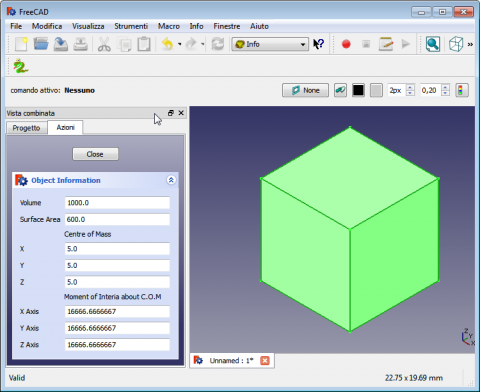

Macro ObjectInfo |
| Description |
|---|
| provides information on the selected object |
| Author |
| keithsloan52 |
| Links |
| Macros recipes How to install macros How to customize toolbars |
| Version |
| 1.0 |
| Date last modification |
| 2012-11-09 |
This macro lets you know the volume information surface area, center of mass and moment of intertia of the selected object.

If you're on Linux, you need to create a folder named "Mod" in the .FreeCAD hidden folder which is located in your Home folder. Then create a folder named "Info" in the "Mod" folder, and extract the content of the archive in it. On Windows, I have no idea where that would be. Use the same procedure to Windows in C:\Program Files\FreeCAD\Mod.
Then start FreeCAD, open your STEP file and switch to the "Info" workbench with the workbench switcher or by going to the View --> Workbench menu. Now select your solid, and click on the "Info" icon; the left taskbar will show some information on the model, including volume, surface area, center of mass and moment of intertia.
A FreeCAD user created a user-friendly "Info" module which you can get here: http://www.sloan-home.co.uk/FreeCAD/Info/Info.html
From Forum Info Workbench - Help with icons please.
{kind=link}
{kind=link}